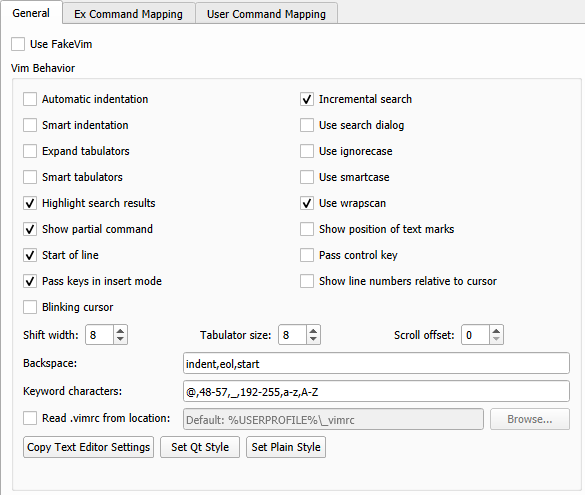

Using FakeVim Mode
In the FakeVim mode, you can run the main editor in a manner similar to the Vim editor. To run the editor in the FakeVim mode, select Edit > Advanced > Use Vim-style Editing or press Alt+V,Alt+V.
Supported Modes and Commands
In the FakeVim mode, most keystrokes in the main editor will be intercepted and interpreted in a way that resembles Vim. Most of the supported commands can be followed by a motion command or executed in visual mode, or they work with registers or can be prefixed with a number of repetitions.
The following sections describe the commands emulated in the supported modes and how they diverge from Vim in functionality:
- Normal
- Visual
- Command line (:)
- Insert and replace
For more information on using Vim, see Documentation on the Vim web site.
Normal and Visual Modes
- Basic movement, such as
h/j/k/l,<C-U>,<C-D>,<C-F>,<C-B>,gg,G,0,^,$ - Word movement, such as
w,e,b - Inner/a movement, such as
ciw,3daw, ya{ fandtmovement[ and \c ]movement- { and } paragraph movement
- Delete/change/yank/paste with register
- Undo and redo
<C-A>and<C-X>increase or decrease a number in decimal, octal, or hexadecimal format (for example128<C-A>on or before"0x0ff"changes it to"0x17f").repeats the last change/search,?search,*,#,n,N- most of regular expression syntax is used in Vim except that\<and\>are the same as\bin QRegExp@andq(macro recording and execution) special keys are saved as<S-Left>- Marks
gvgoes to last visual selection; can differ if text is edited around it- Indentation using
=,<<,>>, with movement, count, and in visual mode - to upper/lower, such as
~,gU,gu i,a,o,I,A, andOenter insert mode- Scroll window, such as
zt,zb,zz - Wrap line movement, such as
gj,gk,g0,g^,g$
Command Line Mode
:map,:unmap,:inoremap, and so on:sourceprovides very basic line-by-line sourcing of vimrc files:substitutesubstitutes an expression in a range:'<,'>!cmdfilters through an external command (for example, sorts the lines in a file with:%!sort):<range>sor[t][!]:.!cmdinserts the standard output of an external command:read:yank,:delete,:change:move,:join:20goes to an address:history:registers,:display:nohlsearch:undo,:redo:normal:<,:>
Insert Mode
<C-O>executes a single command and returns to insert mode<C-V>inserts a raw character<insert>toggles replace mode
Options
Use :set ... to set the options listed in the following table:
| Long Name | Short Name | Arguments |
|---|---|---|
autoindent | ai | |
backspace | bs | indent, eol, start |
blinkingcursor | bc | |
clipboard | cb | |
expandtab | et | |
hlsearch | hls | |
ignorecase | ic | |
incsearch | is | |
iskeyword | isk | A combination of the following characters: @, 48-57, _, 192-255, a-z, A-Z |
relativenumber | rnu | |
scrolloff | so | |
shiftwidth | sw | |
showcmd | sc | |
smartcase | scs | |
smartindent | si | |
smarttab | sta | |
startofline | sol | |
tabstop | ts | |
tildeop | top | |
usecoresearch | ucs | |
wrapscan | ws |
Vimrc Example
" highlight matched set hlsearch " case insensitive search set ignorecase set smartcase " search while typing set incsearch " wrap-around when searching set wrapscan " show pressed keys in lower right corner set showcmd " tab -> spaces set expandtab set tabstop=4 set shiftwidth=4 " keep a 5 line buffer for the cursor from top/bottom of window set scrolloff=5 " X11 clipboard set clipboard=unnamed " use ~ with movement set tildeop " mappings nnoremap ; : inoremap jj <Esc> " clear highlighted search term on space noremap <silent> <Space> :nohls<CR> " reselect visual block after indent vnoremap < <gv vnoremap > >gv " MOVE LINE/BLOCK nnoremap <C-S-J> :m+<CR>== nnoremap <C-S-K> :m-2<CR>== inoremap <C-S-J> <Esc>:m+<CR>==gi inoremap <C-S-K> <Esc>:m-2<CR>==gi vnoremap <C-S-J> :m'>+<CR>gv=gv vnoremap <C-S-K> :m-2<CR>gv=gv
Mapping FakeVim Commands
To map commands entered on the FakeVim command line to actions of the Qt Creator core, select Tools > Options > FakeVim > Ex Command Mapping.
To map user commands to keyboard shortcuts, select Tools > Options > FakeVim > User Command Mapping. The user command mapped to the shortcut is executed by FakeVim as if you were typing it (as when replaying a macro).
Specifying FakeVim Options
To make changes to the Vim-style settings, select Tools > Options > FakeVim > General.

To preselect the indentation settings specified for the text editor, select Copy Text Editor Settings. To preselect the Qt coding style, select Set Qt Style. To preselect a simple indentation style, select Set Plain Style. You can then change any of the preselected settings.
To use a Vim-style color scheme, select Tools > Options > Text Editor > Fonts & Color. In the Color Scheme list, select Vim (dark).
Quitting FakeVim Mode
To quit the FakeVim mode, unselect Tools > Options > FakeVim > Use FakeVim or press Alt+V,Alt+V.
You can temporarily escape FakeVim mode to access the normal Qt Creator keyboard shortcuts like Ctrl-R for Run by pressing , first.